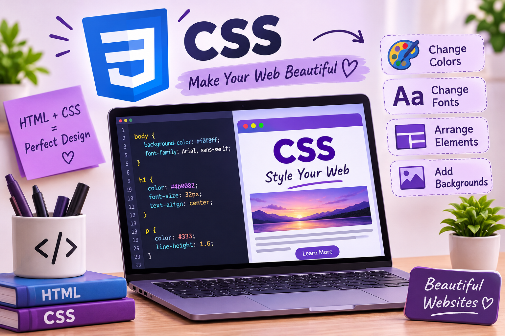

المساق: الانترنت و المنصات الإلكترونية.
اسم الطالب روان ياسر نصرعباس عوض.
الرقم الجامعي : 2501553.
العام الدراسي : 2026.
في الوقت الحالي، أصبح الإنترنت من الأشياء المهمة في حياتنا، ونستخدمه في الدخول إلى المواقع المختلفة، مثل مواقع التعليم والأخبار والتسوق. وعندما ندخل إلى أي موقع نلاحظ أن بعض المواقع تكون ألوانها جميلة، والخطوط واضحة، والصور مرتبة بطريقة تجعلنا نحب استخدام الموقع.
وهذا الشكل الجميل لا يأتي من كتابة النصوص فقط، ولكن توجد لغة تساعد في تنسيق شكل الصفحة، وهي لغة CSS. وتعتبر هذه اللغة من اللغات المهمة في تصميم مواقع الويب، لأنها تساعد على تغيير الألوان والخطوط والأحجام وترتيب العناصر داخل الصفحة.
وفي هذا التقرير سوف أتعرف على لغة CSS ، وأهميتها في تصميم المواقع وكيف يمكن استخدامها في تغيير شكل الصفحة وجعلها أكثر جمالا وسهولة في الاستخدام، مع ذكر بعض الأمثلة البسيطة.
لغة CSS هي اختصار لكلمات Cascading Style Sheets، ومعناها بالعربي أوراق الأنماط المتتالية. وتستخدم هذه اللغة لتنسيق صفحات الويب وتحديد شكل العناصر الموجودة فيها.
وتعمل CSS مع لغة HTML ، حيث تقوم HTML بإنشاء محتوى الصفحة مثل العناوين والفقرات والصور، بينما تقوم CSS بتحديد شكل هذا المحتوى مثل لون العنوان وحجم الخط ولون الخلفية والمسافات بين العناصر.
فمثلا، إذا أنشأنا صفحة تحتوي على عنوان وفقرة، فإن HTML تكتب العنوان والفقرة، أما CSS فتجعل العنوان باللون الأزرق والخط أكبر، ويمكنها أيضًا تغيير لون خلفية الصفحة.
ومن هنا نعرف أن لغة CSS لها دور مهم في جعل صفحات الويب منظمة وجذابة، بدلا من أن تظهر بشكل بسيط وغير منسق.
تساعد لغة CSS في تغيير شكل صفحات الويب بطرق مختلفة، ومن أهم استخداماتها تغيير الألوان والخطوط وأحجام النصوص، بالإضافة إلى التحكم في المسافات وترتيب العناصر داخل الصفحة.
كما تساعد في جعل الموقع أسهل في القراءة والاستخدام، لأن اختيار الألوان المناسبة والخطوط الواضحة يجعل المستخدم قادرًا على الوصول إلى المعلومات بسهولة.
ومن مميزاتها أيضًا أنها تسمح باستخدام نفس التنسيق في أكثر من صفحة، مما يساعد على جعل الموقع كله بنفس الشكل والألوان، بدلا من تنسيق كل عنصر بطريقة مختلفة.
من أهم استخدامات CSS أنها تسمح للمصمم بتغيير لون النص ولون خلفية الصفحة أو أي عنصر موجود فيها. ويمكن اختيار الألوان حسب نوع الموقع، فمثلا يمكن استخدام ألوان هادئة في موقع تعليمي حتى تكون القراءة مريحة.
ويمكن استخدام الكود التالي لتغيير لون العنوان ولون خلفية الصفحة
body {
background-color: lightyellow;
}
h1 {
color: blue;
}
في هذا المثال، الخاصية background-color تستخدم لتغيير لون الخلفية إلى لون أصفر فاتح، أما الخاصية color فتستخدم لجعل العنوان باللون الأزرق.
ومن خلال هذا المثال نلاحظ أن تغيير الألوان باستخدام CSS أمر بسيط، ولكنه يؤثر في شكل الصفحة ويجعلها مختلفة عن الشكل العادي.
تساعد CSS أيضًا في اختيار نوع الخط وحجمه، وجعل العناوين أكبر من الفقرات حتى يستطيع المستخدم التمييز بين أجزاء الصفحة.
على سبيل المثال:
p {
font-size: 18px;
font-family: Arial, sans-serif;
}
في هذا المثال، الخاصية font-size تحدد حجم الخط، وقد اخترنا حجم 18 بكسل، أما الخاصية font-family فتحدد نوع الخط المستخدم في كتابة الفقرة.
ويمكن للمصمم أن يختار خطًا واضحًا ومناسبًا للموقع، لأن الخطوط الصغيرة جدا أو غير الواضحة قد تجعل قراءة المحتوى صعبة على المستخدم.
لا يقتصر دور CSS على الألوان والخطوط فقط، بل يمكن استخدامها في ترتيب العناصر وتحديد المسافات بينها، وإضافة حدود حول بعض العناصر وتنسيق الأزرار والصور.
فمثلا، يمكننا تصميم زر بلون أخضر، مع وجود مسافة داخلية حول النص وحدود مستديرة، باستخدام الكود التالي:
button {
background-color: green;
color: white;
padding: 10px;
border-radius: 8px;
}
في هذا المثال، تم جعل خلفية الزر باللون الأخضر والنص باللون الأبيض، وتستخدم الخاصية padding لإضافة مساحة داخل الزر، بينما تجعل الخاصية border-radius زوايا الزر مستديرة. وهذا يوضح أن CSS تساعد في إعطاء الصفحة شكلا أفضل، وتجعل العناصر أكثر تنظيمًا ووضوحا للمستخدم task2

| عنصر التصميم | الوظيفة في لغة CSS |
|---|---|
| background-color | تغيير لون الخلفية |
| font-size | تحديد حجم الخط |
| border-radius | جعل زوايا العناصر مستديرة |
تتميز لغة CSS بأنها تساعد على تصميم صفحات الويب بطريقة سهلة ومنظمة، كما تسمح بتغيير شكل الصفحة دون الحاجة إلى تغيير محتوى نفسه HTML
ومن مميزاتها أنها توفر الوقت، لأن المصمم يستطيع تطبيق نفس التنسيق على عدد كبير من العناصر في وقت واحد. كما أنها تساعد في توحيد شكل الموقع وتجعل الألوان والخطوط والمسافات متناسقة.
وتساعد CSS أيضًا في تصميم صفحات تناسب أحجام الشاشات المختلفة، مثل أجهزة الكمبيوتر والهواتف المحمولة، وذلك باستخدام أساليب التصميم المتجاوب، حتى يستطيع المستخدم تصفح الموقع بسهولة من جهازه.
على الرغم من أن CSS مفيدة في تصميم المواقع، فإن المبتدئ قد يواجه بعض الصعوبات في البداية، مثل عدم معرفة الخصائص المناسبة لكل عنصر، أو كتابة الكود بطريقة غير صحيحة، أو عدم ظهور التنسيق بالشكل الذي يريده.
وقد يحتاج الطالب إلى تجربة أكثر من لون أو حجم خط حتى يصل إلى الشكل المناسب. لذلك من الأفضل أن يتعلم الأساسيات بالتدريج، ويطبق الأمثلة بنفسه، ويجرب تغيير القيم حتى يفهم تأثير كل خاصية.
ومن المهم أيضًا الاهتمام باختيار الألوان والخطوط التي تجعل الصفحة سهلة القراءة، وليس التركيز على الشكل الجميل فقط، لأن الموقع الجيد يجب أن يكون جميلا وسهل الاستخدام في الوقت نفسه.
في نهاية هذا التقرير، أستطيع أن أقول إن لغة CSS من اللغات المهمة في تصميم مواقع الويب، لأنها تساعد على تحويل الصفحة من مجرد نصوص وعناصر بسيطة إلى صفحة منظمة وجذابة.
ومن خلال CSS يمكننا تغيير الألوان والخطوط والخلفيات، وتنسيق الأزرار والصور والمسافات بين العناصر. كما تساعد هذه اللغة في جعل الموقع مناسبا للمستخدم وأسهل في القراءة والتصفح.
وفي رأيي، فإن تعلم CSS مهم لكل شخص يريد أن يتعلم تصميم مواقع الويب خاصةً إذا بدأ بتجربة الأكواد البسيطة ثم انتقل إلى تصميم صفحات أكثر تنظيما وجمالا. ومع التدريب والممارسة يمكن للطالب أن يطور مهاراته ويصمم صفحات ويب بالشكل الذي يريده.
تم الرجوع إلى هذه المصادر للتعرف على أساسيات لغة CSS، وطريقة استخدامها في تغيير الألوان والخطوط وتنسيق عناصر صفحات الويب.